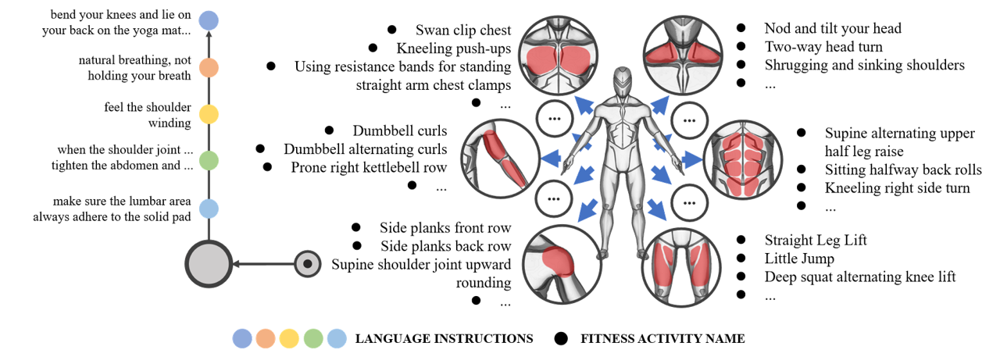
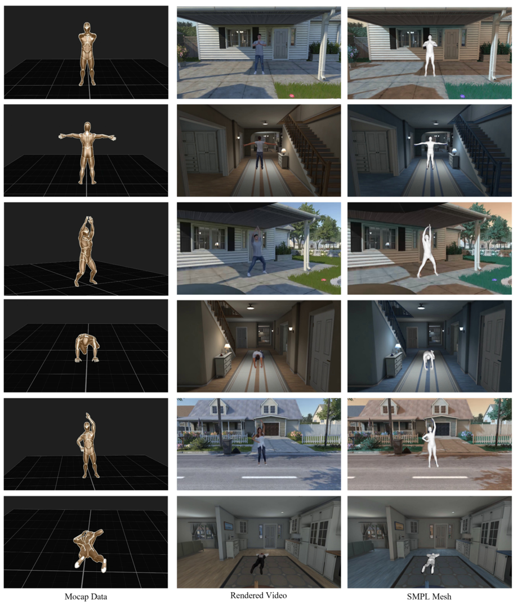

FLAG3D: A 3D Fitness Activity Dataset with Language Instruction
CVPR 2023
* equal contribution, ✝ project lead, ◊ corresponding authors
{1Shenzhen International Graduate School, 2Department of Automation}, Tsinghua University
Abstract
With the continuously thriving popularity around the world, fitness activity analytic has become an emerging research topic in computer vision. While a variety of new tasks and algorithms have been proposed recently, there are growing hunger for data resources involved in high-quality data, fine-grained labels, and diverse environments. In this paper, we present FLAG3D, a large-scale 3D fitness activity dataset with language instruction containing 180K sequences of 60 categories. FLAG3D features the following three aspects: 1) accurate and dense 3D human pose captured from advanced MoCap system to handle the complex activity and large movement, 2) detailed and professional language instruction to describe how to perform a specific activity, 3) versatile video resources from a high-tech MoCap system, rendering software, and cost-effective smartphones in natural environments. Extensive experiments and in-depth analysis show that FLAG3D contributes great research value for various challenges, such as cross-domain human action recognition, dynamic human mesh recovery, and language-guided human action generation. Our dataset and source code will be publicly available.
Dataset
1. Overview of FLAG3D Dataset
 |
2. Illustration of the Taxonomy
|
 |
{kind=link}
3. Dataset Gallery
|
 |
{kind=link}
4. Action Classes
Download
Bibtex
If you find our project useful, please consider citing us:
@inproceedings{flag3d_cvpr,
title={FLAG3D: A 3D Fitness Activity Dataset with Language Instruction},
author={Yansong Tang and Jinpeng Liu and Aoyang Liu and Bin Yang and Wenxun Dai and Yongming Rao and Jiwen Lu and Jie Zhou and Xiu Li},
booktitle={CVPR},
year={2023},
}